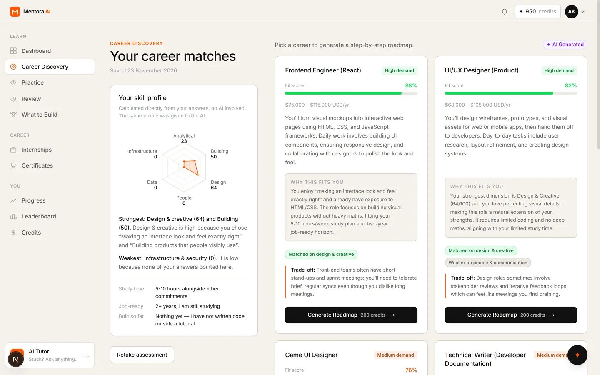

01 · Career discovery
Find careers that fit you, and see why
Your 14 answers become six skill scores, worked out without AI, and each strength quotes the answers behind it. Then AI ranks careers by fit, with demand, a salary range and an honest trade-off.
